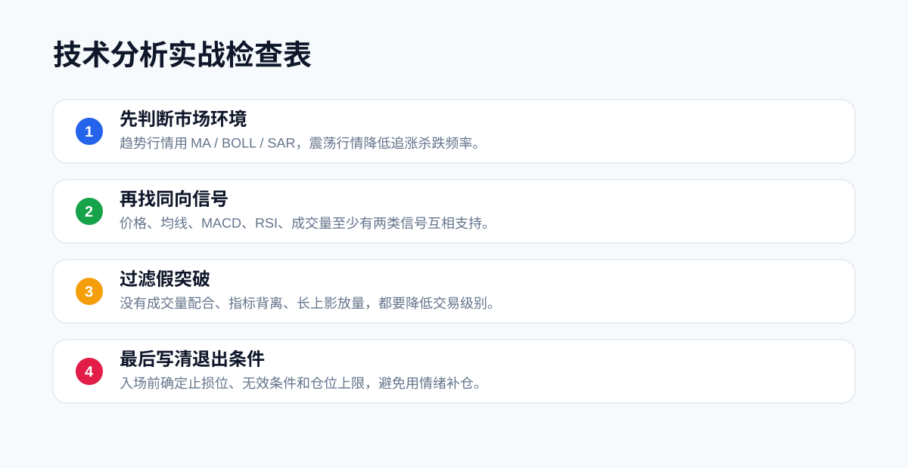

学会单个指标只是第一步。真正实战时，交易者需要把多个指标放进同一个分析框架里，而不是看到哪个指标给信号就临时行动。
01
第一步：判断市场环境
先看价格和均线的位置。如果价格在 MA20、MA60 上方，且均线向上发散，市场更偏趋势上涨。如果价格跌破多条均线，市场更偏弱势。如果均线缠绕，说明行情可能还在震荡。
趋势行情适合顺势思路，震荡行情则要降低追涨杀跌频率。
02
第二步：找关键位置
指标不能替代支撑阻力。先找前高、前低、平台区间、成交密集区，再判断这些位置附近的信号质量。
比如价格靠近前高时，突破是否放量？MACD 是否转强？RSI 是否仍在 50 上方？这些问题比单独看一个金叉更重要。
03
第三步：看指标是否同向
更好的信号通常来自多类指标共振：
- 趋势类：MA、BOLL、SAR 支持同一方向。
- 动能类：MACD、KDJ、RSI 没有明显背离。
- 量能类：成交量支持突破或反转。
- 情绪类：交易大数据没有过度拥挤。
如果指标互相矛盾，就应该降低仓位，或者先观察。
04
第四步：提前写好交易计划
完整计划至少包括：
- 入场条件：什么情况才行动。
- 失效条件：什么情况说明判断错了。
- 止损位置：最大亏损控制在哪里。
- 止盈方式：到目标位止盈，还是用 SAR/均线移动止盈。
- 仓位上限：单次交易最多承受多少风险。
05
第五步：复盘而不是只看结果
一笔交易赚钱不代表方法正确，亏钱也不代表方法错误。复盘时要看当时的判断是否符合计划，是否有临时追单、补仓、移动止损等行为。
06
示例一：趋势突破
假设某个币种长期在区间内震荡，价格多次冲击前高都失败。某一天价格放量突破前高，同时站上 MA20 和 MA60，BOLL 开口向上，MACD 红柱开始放大，RSI 位于 50 上方。
这类信号说明趋势和动能都在改善，突破质量相对更高。但交易计划仍然不能缺失：可以把突破位或 MA20 附近设为观察支撑，如果价格很快跌回区间内，就说明突破失败。
07
示例二：高位追涨风险
价格连续上涨后，RSI 已经处在高位，KDJ 出现高位死叉，TD 给出风险提醒，成交量却没有继续放大。这个时候即使价格还没跌，也不适合重仓追入。
更稳妥的处理方式是等待回踩，或者只保留观察。技术分析不是为了抓住每一段行情，而是避免在赔率不好的位置冲动交易。
08
示例三：下跌后的反弹观察
价格经过连续下跌后，跌到前期支撑位附近。此时成交量开始缩小，MACD 绿柱缩短，RSI 不再创新低，KDJ 低位金叉。
这说明下跌动能可能减弱，但还不能直接确认反转。后续需要观察价格能否站回 MA20，或者能否突破最近一段下跌趋势线。如果只是弱反弹后继续跌破支撑，就要及时放弃。
09
一套简化评分法
新手可以给每个交易机会做一个简单评分：
- 趋势方向清晰：1 分。
- 关键位置明确：1 分。
- 动能指标同向：1 分。
- 成交量配合：1 分。
- 情绪数据不过度拥挤：1 分。
- 止损位置清楚：1 分。
如果只有 2 分以下，通常不值得交易。如果有 4 分以上，才进入下一步计划。评分不是为了机械交易，而是避免临时冲动。

10
参考来源
- OKX：零基础学K线系列常用分析指标教学
https://www.okx.com/zh-hans/learn/zero-based-learning-market-analysis